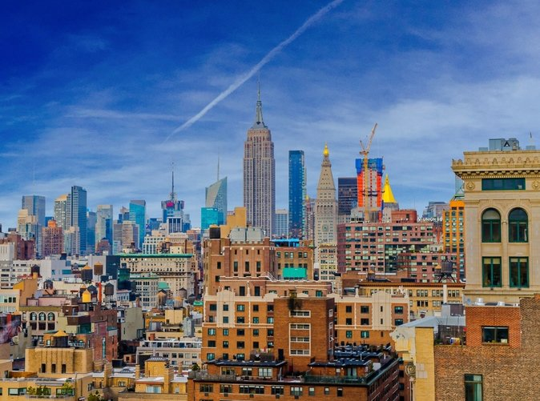
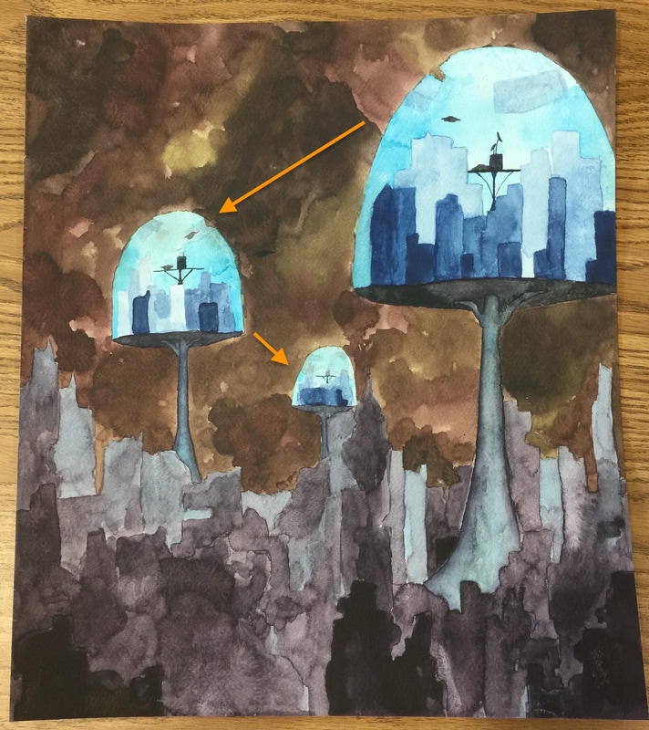

My painting is inspired by New York City, but since this is a post-apocalyptic scene, most of the buildings are destroyed. The only clue that this was New York is the remains of the Empire State Building right next to the smallest glass dome. I didn't want it to be clear what city it was to show how ruined the world was, so I didn't pay much attention to making the rest of the skyline similar to New York. The only element added to the city is the glass domes. These buildings weren't inspired by any city in particular, but a general pattern of every city silhouette.
 The focal point is the largest glass structure on the top right corner because it contrasts with the rest of the painting's dark colors. One reason for placing it there was to use three point perspective. The other reason was to lead the viewers from the top right corner to the next structure on the left, and finally down to the dark buildings. This lets them travel through the entire painting.
I used aerial perspective in my final painting. It's visible in the dark buildings at the bottom of the painting and the buildings on platforms. While I still painted them gradually lighter the farther they were, I also painted each building or parts of it differently instead of creating layers of buildings that would be painted in the same color.
I used the dry-brush technique and two new techniques. The dry brush technique was used for the small planes and platforms inside the glass structures.
My second technique, which is similar to wet-on-wet, was used for the sky and dark buildings. I would paint with a lot of water in one area, then add more pigment with very short strokes or just touches. Then I would gradually add more water and pigment until it covered the entire area I wanted to paint. The only times I used longer strokes was when i wanted to mix some colors. This technique allowed the toxic clouds to appear heavier and bulkier and the buildings at the bottom more destroyed.
My third technique was used in the columns holding up the glass structures. I would first paint the sides of it, which I wanted to be darker, with thicker paint. Then I would paint the middle with the diluted paint while also blending the darker areas to create a smooth transition between the highlight and shadow. To create a stronger contrast, I also added only water to the middle of the column by repeatedly touching the paper, which pushed the pigment away and to the sides.